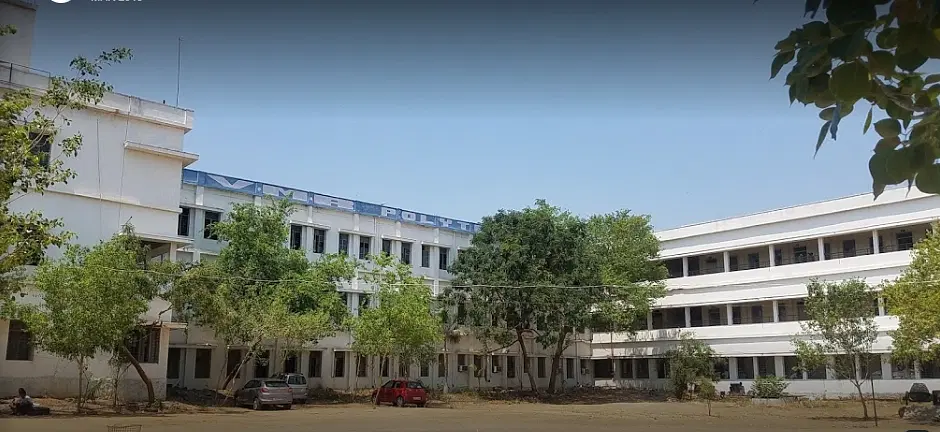
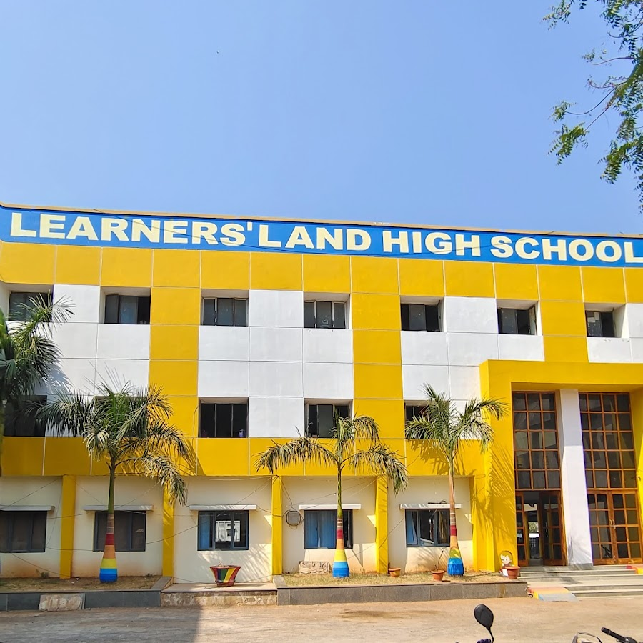

About ME


I have successfully completed my Diploma in Mechanical Engineering from VMR Polytechnic with a commendable CGPA of 7.6. This achievement showcases my dedication to academic excellence and a strong aptitude for the field of mechanical engineering.
During my diploma program, I gained comprehensive knowledge and skills in various aspects of mechanical engineering. The curriculum covered subjects such as thermodynamics, mechanics, fluid mechanics, material science, manufacturing processes, and more.
My time at VMR Polytechnic provided me with a comprehensive understanding of mechanical engineering concepts and prepared me to tackle real-world challenges in the field. I am equipped with the knowledge, practical skills, and a strong work ethic to contribute effectively to the industry.
VMR Polytechnic
During my diploma program, I gained comprehensive knowledge and skills in various aspects of mechanical engineering. The curriculum covered subjects such as thermodynamics, mechanics, fluid mechanics, material science, manufacturing processes, and more.

I am immensely proud to share that I have successfully concluded my schooling at Learners Land High School, leaving an indelible mark with my remarkable achievement of attaining an outstanding GPA of 7.5. This noteworthy academic accomplishment serves as a testament to my unwavering commitment, relentless perseverance, and unwavering pursuit of excellence. Learners Land High School, with its unparalleled educational environment, has played an integral role in shaping my intellectual growth and preparing me holistically for the challenges that lie ahead. Through their unwavering support, rigorous curriculum, and nurturing guidance, the school has equipped me with the necessary tools and knowledge to thrive in my future endeavors.
Lerarner's Land High School
Projects
My Portfolio
My portfolio serves as my first project.Additional projects are on the way, stay tuned for updates.
Contact